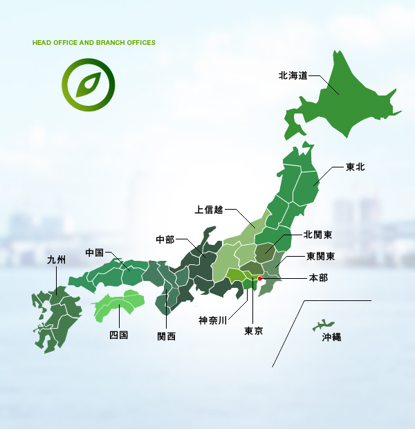

心理学の理論と実技を体系的に。全国＋オンラインで。
養成講座を見る →実施要領・受験申請・合否発表まで、ここから。
試験情報を見る →専門家がワンストップ対応。安心の体制づくりを。
専用サイトへ ↗スマホからチャットで相談。ひとりで抱え込まないで。
SNS相談ページへ →カウンセリングの基礎をオンラインで。入門にぴったり。
講座ページへ →「支える人」を育て、「働く人」に寄り添い、その知見を社会に還す。
各部署申請 → 広報部承認・掲載期限つきで自動整理される「キャンペーンバナー枠」です。
常設のサービスLPバナー3枠。それぞれの専用サイトで、詳しいご案内とお申し込みができます。
※ 各サービスサイト（LP）へ移動します。リニューアル後もトップページから常設導線でご案内します。
60年余にわたり、働く人と組織を支えてきた確かな土台があります。


北海道から沖縄まで、全国13支部と、その事務所・相談室（16拠点）が地域の講座・相談・交流を支えています。各支部は独自サイトを運営し、URLのない事務所・相談室も含めて拠点一覧でご案内します。